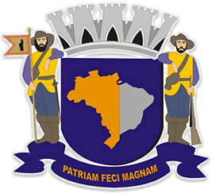

Portal Geo Parnaíba
Mapas Base
Thunderforest
Google Streets
Google Hybrido
Google Satelite
OSM
Stadia
Download GeoJSON
Limite Municipio
Municípios vizinhos
Massa Dágua Stna
Curso Dágua Stna
Nascentes Dágua Stna
App 50m Nascentes Stna
App 15m Curso Dagua Stna
Curvas de Nível Stna
Inuncadação Risco Alto
Inundação Risco Moderado
Inundação Risco Baixo
Áreas de Escorregamento
Áreas de Salopamento
Copiar GeoJson